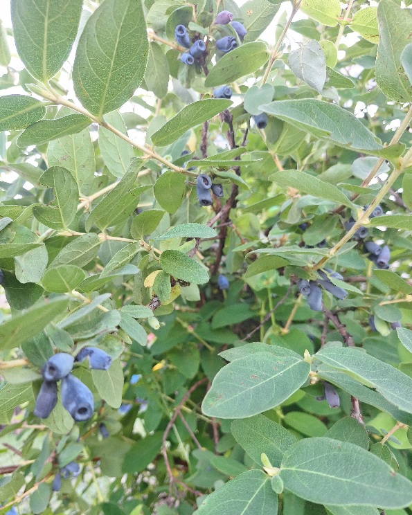

Майска боровинка - (Lonicera kamtschatica)


Лоницера камчатска е студоустойчив овощен храст, известен със своите продълговати синьо-лилави плодове и изключително ранно плододаване. Плодовете узряват още през май, преди повечето ягодоплодни култури, и се отличават с приятен сладко-кисел вкус и високо съдържание на антиоксиданти, витамини и минерали. ✔ Ранно плододаване ✔ Изключителна студоустойчивост до -40°C ✔ Висока продуктивност ✔ Лесно отглеждане без специални грижи ✔ Подходяща за прясна консумация, сладка, сокове и замразяване Лоницерата е отличен избор за любителски градини и професионални насаждения, като осигурява вкусни и полезни плодове още в началото на сезона. 🌿 Здраве, вкус и богата реколта още през пролетта! 🌿
4€ / 2л.контейнер
Поръчай по WhatsApp
📞 Телефон: 0877779963
⬅ Обратно към началната страница